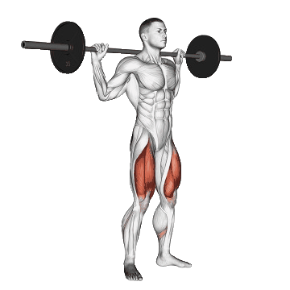

1.Sentadilla con barra

- Primero, separa los pies al ancho de los hombros y sujeta la barra con fuerza.
- Apoya la barra sobre los trapecios (parte alta de la espalda), saca pecho y gira ligeramente los pies hacia afuera (unos 40º).
- Respira hondo, retrae las escápulas y aprieta el abdomen. Empieza a bajar flexionando las rodillas hasta que los muslos estén paralelos al suelo. Los talones deben estar pegados al suelo en todo momento.
- Los cuádriceps hacen mucho trabajo en la segunda parte de la sentadilla (en la subida), por eso, empuja hacia arriba con los talones mientras exhalas.
- Recuerda mantener la curvatura normal de la espalda, evita doblarla o curvarla.
- Coloca la barra de nuevo en el rack o sigue haciendo repeticiones.
- Las sentadillas son un ejercicio adecuado para cualquier persona que busque crecimiento y/o definición muscular, porque involucran más músculos que cualquier otro. Implican los cuádriceps, los isquiotibiales, los glúteos y el core, lo que ayuda a aumentar la fuerza y mejorar el físico. Por lo tanto, incluir las sentadillas en tus entrenamientos te ayudará a endurecer, tonificar y definir tus piernas.
- Si las sentadillas no se realizan correctamente, se puede producir un exceso de estrés en la espalda baja que puede causar lesiones. Los dos motivos más comunes de lesiones en la espalda al hacer sentadillas con barra son levantar demasiado peso e inclinarse demasiado hacia delante, porque la tensión se produce en la espalda y no en las piernas y las caderas.